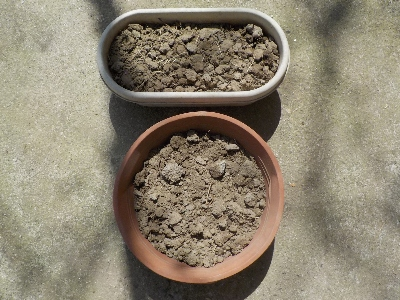
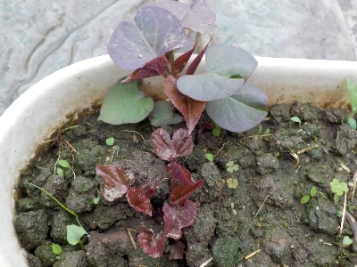
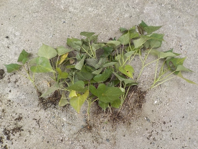
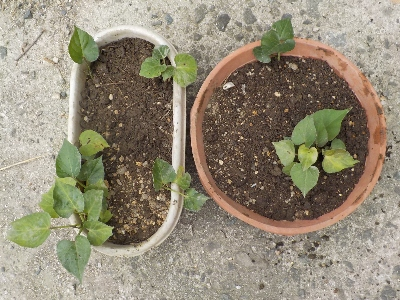
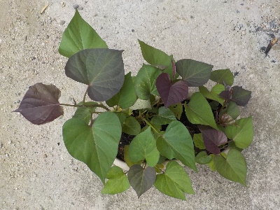
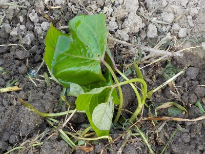
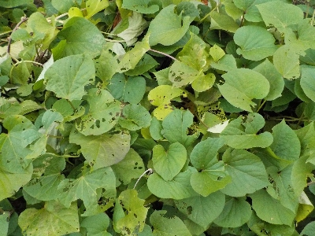
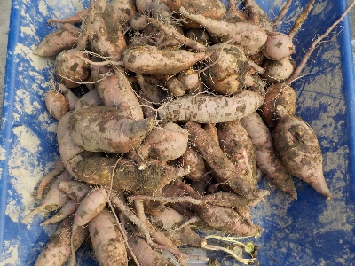

去年掘った小さいサツマイモを植えました。
更新日 : 2024/04/07

去年収穫した、食べるには小さ過ぎるサツマイモを鉢に植えました。
すでに小さな赤い芽が出来ているので、近いうちに土の中から芽が出てくると思います。
更新日 : 2024/04/07

去年収穫した、食べるには小さ過ぎるサツマイモを鉢に植えました。
すでに小さな赤い芽が出来ているので、近いうちに土の中から芽が出てくると思います。
更新日 : 2024/04/21

植えたサツマイモから芽が出ました。
お店で売ってるような長いツルにしようと思ったら、液肥を使うといいのかな？
更新日 : 2024/06/16

根っこはちゃんと出てるんですが、ツルは短いです。なので水平植えや斜め植えは出来ません。垂直植えのみです。

短い苗とサツマイモは再度鉢に植えました。またツルが育てば畑に植えます。
更新日 : 2024/06/29

芋から育ている苗が成長したので、また畑に植えました。
気温が高くなったので成長のスピードが速いです。
更新日 : 2024/07/06

苗が余ったそうでいただきました。自分で苗を育てる人は沢山作っちゃうので余りますね。
今年は大量にサツマイモを植えたのでこれでもう植えません。
今育てている苗がありますが、それはもう使わないな。
更新日 : 2024/11/24

サツマイモを収穫して食べていますが、まだ葉っぱが青々しているので必要以上に収穫していません。
でもちょっと寒くなったので、そろそろ収穫かな。来週はもう12月だし。
更新日 : 2024/12/07

天気が良かったのでサツマイモの収穫をしました。
これ以上遅くなっちゃうときっと寒いので、いいタイミングで収穫出来て良かったです。
サツマイモは美味しいけど、沢山あると毎日のように食べることになりますね。